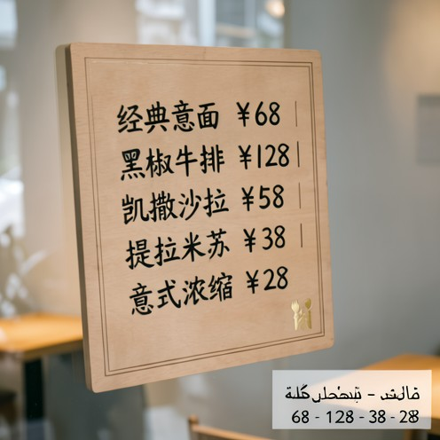

样本1

工具链：Grounding -> SAM -> Extract -> ImageEdit -> OCR -> ImageEdit
该系统的12个样本详情页。
工具链：Grounding -> SAM -> Extract -> ImageEdit -> OCR -> ImageEdit

工具链：Grounding -> SAM -> Extract -> OCR -> ImageEdit -> Grounding -> ImageEdit -> OCR -> Grounding -> ImageEdit

工具链：Grounding -> SAM -> Extract -> OCR -> ImageEdit -> Grounding -> ImageEdit -> OCR -> ImageEdit -> Grounding -> ImageEdit
工具链：Grounding -> SAM -> Extract -> OCR -> ImageEdit -> Grounding -> ImageEdit -> OCR -> ImageEdit
工具链：Grounding -> SAM -> Extract -> Overlayer -> OCR -> Grounding -> ImageEdit -> OCR -> Grounding -> ImageEdit
工具链：Grounding -> SAM -> Extract -> OCR -> Grounding -> OCR -> ImageEdit -> Grounding -> OCR -> ImageEdit
工具链：Grounding -> SAM -> Extract -> OCR -> ImageEdit -> Grounding -> SR -> OCR -> Grounding
工具链：ImageGeneration -> ImageEdit

工具链：ImageGeneration -> Grounding -> ImageEdit

工具链：Grounding -> SAM -> Extract -> Overlayer -> ImageEdit -> OCR -> ImageEdit -> Grounding -> ImageEdit

工具链：Grounding -> SAM -> Extract -> OCR -> ImageEdit -> OCR -> Grounding -> ImageEdit
工具链：Grounding -> SAM -> Extract -> ImageEdit -> OCR -> Grounding -> ImageEdit